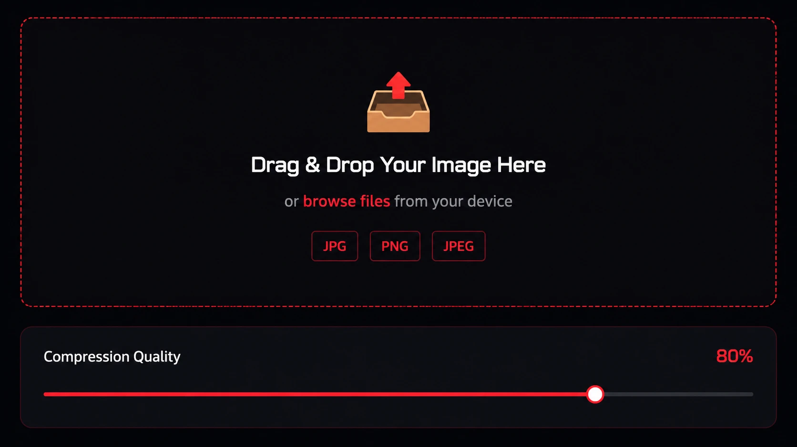

With the internet fully transitioning to next-generation image formats, the demand for fast, reliable, and high-quality conversion tools has skyrocketed. Web developers, SEO experts, and everyday bloggers are constantly looking for the most efficient way to shrink their image payloads.
But here is the harsh reality: Not all image converters are created equal. In 2026, the criteria for the "best" converter have shifted dramatically from just basic functionality to strict privacy standards and instantaneous speed.

The Hidden Dangers of Traditional Converters
For the past decade, traditional image converters operated on a standard server-side model. You would go to a website, upload your private photos to their remote server, wait in a digital queue, let their server process the file, and finally download the result. This outdated model presents massive problems for modern users:
- Severe Privacy Risks: Your personal, corporate, or sensitive images are sitting on a stranger's server. You have absolutely no guarantee that your data is truly deleted after you close the tab.
- Painfully Slow Speeds: You are entirely limited by your internet's upload and download bandwidth. If you are converting a 10MB high-resolution photograph on a slow connection, it can take minutes.
- Hidden Limits & Paywalls: Many of these tools bait you in with the word "Free", only to stop you after 3 conversions, demanding you pay a monthly subscription for a "Premium" account.
"The modern web demands tools that respect user privacy. Any tool that forces you to upload your files to a remote server when it isn't strictly necessary is fundamentally outdated."
The Modern Solution: Client-Side Processing
So, what makes a tool the best free WebP converter today? The answer lies in the architecture: Client-Side Processing.
Modern tools like Webp Moder by Shekh utilize advanced HTML5 Canvas and JavaScript APIs. This technology allows the web application to process and compress the image directly inside your own web browser, using your device's own CPU power.
Why Webp Moder is the Top Choice in 2026
We built Webp Moder specifically to solve the frustrations associated with outdated, clunky, and predatory conversion tools. Here is a detailed breakdown of why developers and creators prefer our platform:
- Absolute Privacy Guarantee: Zero bytes of your image data ever leave your device. Because there are no uploads, there is no risk of data leaks or privacy breaches. It is 100% secure for sensitive materials.
- Instantaneous Conversions: By eliminating the need to upload to a remote server, the conversion process happens in milliseconds, right before your eyes.
- Precision Quality Control: Unlike tools that force a generic compression algorithm on your files, we provide a live, interactive quality slider. You dictate exactly how much compression you want, giving you the perfect balance of file size and visual fidelity.
- Truly Free Bulk Processing: No accounts, no email signups, and no hidden paywalls. Whether you need to quickly compress a single photo or batch-convert 50 images at once into a ZIP file, the tool remains completely free with zero daily limits.
How to Use the Tool Effectively
Having the best tool is only half the battle; knowing how to use it optimally is the rest. When you drop a batch of JPGs or PNGs into our converter, you can use the global quality slider to control the whole queue. For general web use (like blog posts or e-commerce galleries), locking that slider between 75% and 85% hits the sweet spot. You'll see a massive 40-60% reduction in file size across the board with no noticeable drop in visual quality.

Frequently Asked Questions
Do I need a powerful computer to use a client-side converter?
Not at all. The HTML5 Canvas API is incredibly well-optimized. Even a standard budget smartphone or a 5-year-old laptop can convert high-resolution images into WebP format in just a few seconds.
Are there any file size limits?
Because the processing happens on your device's RAM rather than our servers, the only limit is the memory capacity of your device. For 99% of images, you will never encounter a limit.
Is WebP supported everywhere now?
Yes. As of 2026, over 96% of global browsers support WebP naturally. It is the recommended format by Google's own PageSpeed Insights tool.
Final Thoughts
In the quest for a faster, more optimized website, your choice of tools matters. You shouldn't have to compromise your privacy or your wallet just to convert an image format. By embracing modern, client-side applications like Webp Moder by Shekh, you empower yourself with a fast, secure, and professional-grade optimization workflow.
Experience the Speed Difference
Stop waiting in digital queues and risking your data. Batch-process up to 50 images safely, instantly, and download them as a ZIP right on your own device.
⚡ Open Free WebP Converter